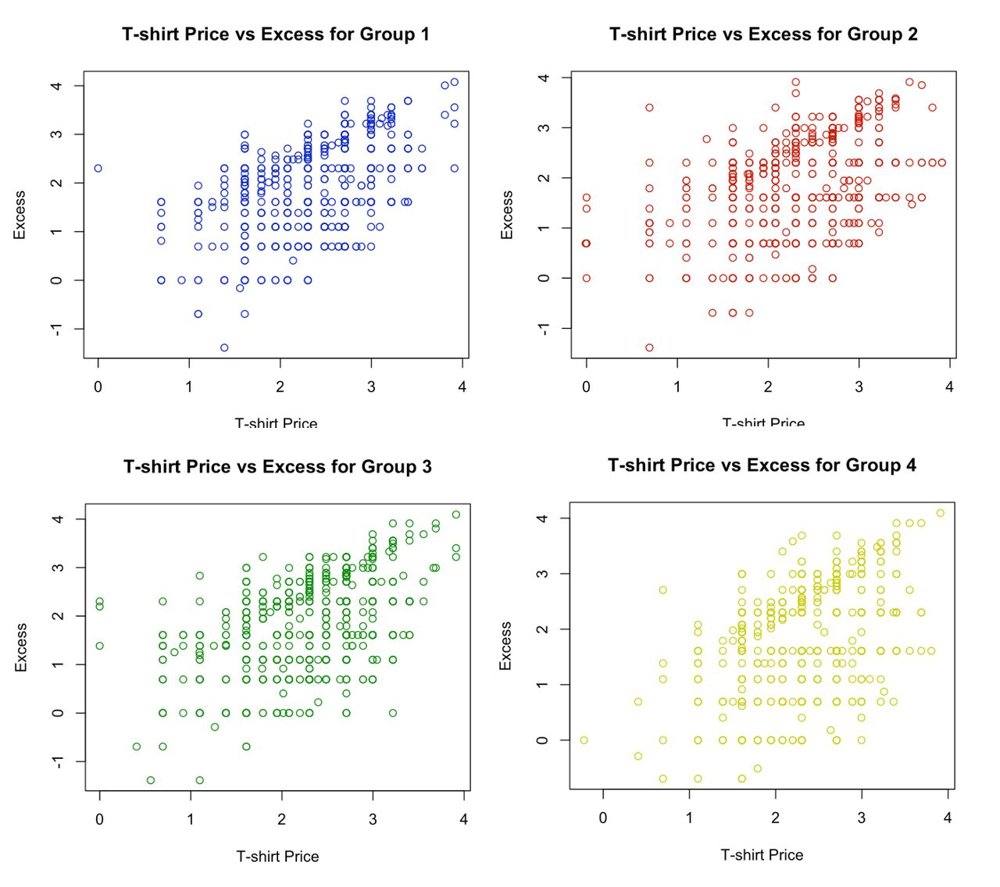

|
I am a data scientist and researcher with a Master’s in Business Analytics from Bentley University. My work focuses on Bayesian networks, sentiment analysis, and data visualization, exploring consumer preferences and societal trends. |

|
News
- May 2024: Graduated with M.S. in Business Analytics from Bentley University (GPA: 3.94).
- Apr 2024: Publication accepted in Chance (ASA): "Bayesian Analysis of America's Business Attitudes."
- Mar 2024: Submitted papers to Significance (RSS) on decision-making and Rasch models.
- Feb 2024: Won 2nd place in NABA x Bentley Business Bowl for Responsible AI case study.
Selected Projects
|  |
Exploring Consumer Preferences Bentley-Gallup Force for Good Survey Performed hypothesis testing on randomized survey responses to assess question framing impact. project page |

|
SAT Scores and Racial Composition Analysis Conducted regression analysis on Massachusetts school data to examine demographic influences. project page |